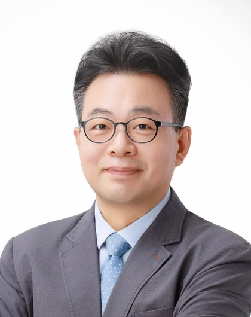

인사말

동남권AI혁신연구센터 홈페이지를 찾아 주신 여러분께 진심으로 감사드립니다.
동남권AI혁신연구센터는 부산대학교가 과학기술정보통신부·정보통신기획평가원(IITP)의 지역지능화혁신인재양성 사업에 선정되어 설립한 연구센터입니다. 우리 센터는 동남권 제조·항만 산업의 AI 전환과 기업 기술 자립을 위한 혁신 인재 양성을 목표로 하고 있습니다.
인공지능은 이제 산업 현장의 경쟁력을 좌우하는 핵심 기술이 되었습니다. 지역 기업이 외부에 의존하지 않고 스스로 AI 기술을 개발하고 운영할 수 있도록, 센터는 참여기업과 함께하는 산학 공동연구, 재직자를 위한 첨단AI융합학과 석사과정, 기업·대학·지방자치단체가 함께하는 지역 인재양성 협력을 하나의 체계로 연결해 운영하겠습니다.
현장의 문제에서 출발한 연구가 교육으로 이어지고, 교육받은 인재가 다시 지역 산업의 혁신을 이끄는 선순환 구조를 만들어 가겠습니다. 동남권 산업과 함께 성장하는 센터가 될 수 있도록 여러분의 많은 관심과 참여를 부탁드립니다.
감사합니다.
동남권AI혁신연구센터장 백윤주